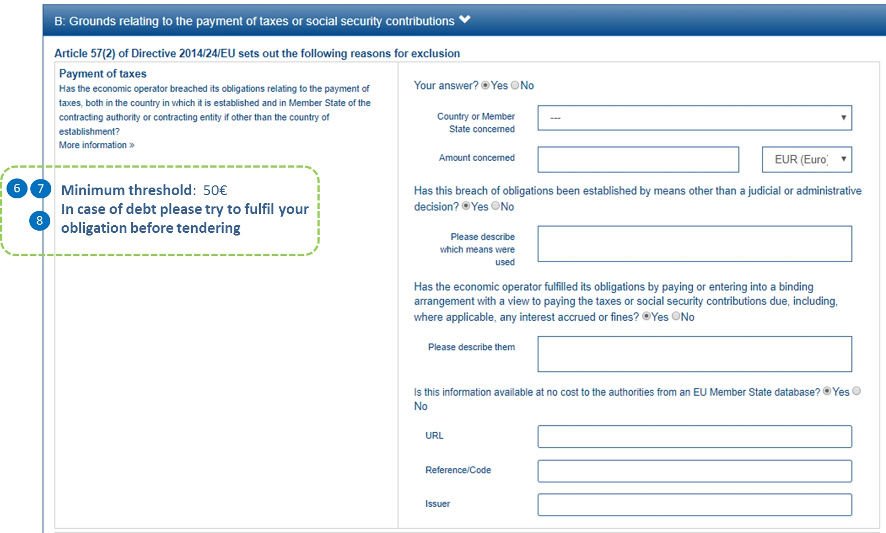

Exclusion grounds
| The links to the business code explanations are provided by e-Sens and are hosted by the University of Piraeus. Availability to the information is therefore subject to external schedules. |
REQUIREMENT tbr092-015, br41-002 |
The contracting body shall provide the exclusion grounds and selection criteria for its tendering process as structured information - via ESPD template or structured list of criteria set out in a call for tender. |
REQUIREMENT tbr070-009 |
The ESPD request must contain information about the criteria that set the exclusion grounds as stated in directive 2014/24/EU Art. 57 and referred to in directive 2014/25/EU Art. 80 and/or according to national legislation. These should be retrieved from e-Certis. |
As suggested in section "Criteria Data Structures" criteria may be grouped in several different categories. The figure below is intended to identify and list these categories for the Exclusion criteria (branches in text boxes), and specific subgroups within each category (leaves in text without boxes).
Each branch in this 'criteria classification' corresponds to one data structure that is identical for all the leaves under that branch.
Convictions
Information requirement
See formal requirements related to exclusion grounds in the BIS 41 - European Single Procurement Document (Version 2.0.0), and more specifically tbr070-009, tbr070-004, tbr070-013.
The label ''Convictions'' groups all the criteria with identical data structures classified as:
''participation in a criminal organisation'', ''corruption'', ''fraud'', ''terrorist offences linked to terrorist activities'', ''money laundering or terrorist financing'', ''child labour and other forms of trafficking in human beings''.
| Note about the ESPD Service |
Initially, the European Commission provided an ESPD service to support the ESPD’s uptake. As announced in 2018, the Commission’s ESPD service was turned off on 2 May 2019.
To reap the full benefit of an electronic ESPD, the integration with national eProcurement services and national databases is necessary. This enable data reusability, default form pre-filling, and data inter-exchange amongst different databases. In turn, buyers and suppliers benefit from this exchange, making the application of the ESPD much easier and decreasing data error rates.
Data structure
See Criterion 1 (C1) in the Criterion File.
XML Example
The xml of the criterion is best viewed directly in the xml examples made available in release v3.3 on GitHub:
|
Note for the future: Cross-border/cross-sector codes Some relevant trans-European initiatives like ECRIS, BRIS, EESSI, and other, have defined Code Lists and other reference data that could be used in e-Procurement, specifically by the ESPD. This would enhance the cross-border and cross-sector semantic and technical interoperability. Thus, in the case of Convictions, a new requirement could be introduced in G1 (see figures above) asking for the ECRIS Code corresponding to the offence that is specified in the Response where the Economic Operator answered ''yes'' to the first Requirement. The ECRIS Codes can be consulted in the Annex to the COUNCIL DECISION 2009/316/JHA of 6 April 2009 on the establishment of the European Criminal Records Information System (ECRIS) in application of Article 11 of Framework Decision 2009/315/JHA. |
Contributions
Related information requirements
See formal requirements related to exclusion grounds in the BIS 41 - European Single Procurement Document (Version 2.0.0), and more specifically tbr070-009, tbr070-004, tbr070-013.
REQUIREMENT |
The buyer needs to be able to specify national exclusion criteria linked to one EU criterion, as well as criteria particular for the procurement procedure. The economic operator will have to respond "Yes" or "No" to each national criterion in the ESPD Response document, thus confirming whether it is in breach of the Law. |
See also the REQUIREMENT tbr070-015 about economic thresholds regarding unpaid taxes or social security obligations.
Mock-ups - buyer perspective
The screen-capture below represents a possible scenario, from the buyer perspective, for the edition of requirements in 'Contributions' criterion (Payment of Taxes).

Figure 3. 'Payment of Taxes', REQUIREMENT edition (Buyer Perspective)
Mock-ups - economic operator perspective
This is what the economic operator would see.
|
Beware that this is not showing the national criteria. Here it is presumed that by answering 'Yes' to the general EU criterion all the national criteria QUESTION 'Your answer' will be also set to 'Yes'. |

Figure 4. 'Payment of Taxes', (EO perspective)
Data structure
See Criterion 7 (C7) in the Criterion File.
Environment, Social, Labour Law
Related information requirements
See formal requirements related to exclusion grounds in the BIS 41 - European Single Procurement Document (Version 2.0.0), more specifically tbr070-009, tbr070-004, tbr070-013.
Category ''Social'' encompasses criteria with identical data structures, classified as:
''breaching of obligations in the fields of environmental law'', ''breaching of obligations in the fields of social law'' and ''breaching of obligations in the fields of labour law''.

Mock-ups - economic operator perspective
|
Beware that this mock-up is not showing the national criteria. For this mock-up it is presumed that by answering 'Yes' to the general EU criterion all the national criteria QUESTION 'Your answer' will be also set to 'Yes'. |

Figure 7. 'Environmental Law' criterion mock-up - EO perspective
Data structure
See Criterion 9 (C9) in the Criterion File.
Business
Related information requirements
See formal requirements related to exclusion grounds in the BIS 41 - European Single Procurement Document (Version 2.0.0), and more specifically tbr070-009, tbr070-004, tbr070-013.

Mock-ups - economic operator perspective
| Beware that this mock-up is not showing the national criteria. For this mock-up it is presumed that by answering 'Yes' to the general EU criterion all the national criteria QUESTION 'Your answer' will be also set to 'Yes'. |

Figure 10. 'Bankruptcy' criterion mock-up - economic operator perspective
Data structure
See Criterion 12 (C12) in the Criterion File.
Misconduct
Related information requirements
See formal requirements related to exclusion grounds in the BIS 41 - European Single Procurement Document (Version 2.0.0), and more specifically tbr070-009, tbr070-004, tbr070-013.
Mock-ups - buyer perspective

Figure 12. 'Professional misconduct' criterion mock-up - buyer perspective
Mock-ups - economic operator perspective
| Beware that this mock-up is not showing the national criteria. For this mock-up it is presumed that by answering 'Yes' to the general EU criterion all the national criteria QUESTION 'Your answer' will be also set to 'Yes'. |

Figure 13. 'Professional misconduct' criterion mock-up - economic operator perspective
Data structure
See Criterion 18 (C18) in the Criterion File.
Conflict of interest
Related information requirements
See formal requirements related to exclusion grounds in the BIS 41 - European Single Procurement Document (Version 2.0.0), and more specifically tbr070-009, tbr070-004, tbr070-013.
We have divided the conflict of interest criteria in two groups, this first group is composed of two criteria with the same structure:
-
partic-confl: Conflict of interest due to ''direct or indirect involvement in the preparation of this procurement procedure'';
-
prep-confl: Conflict of interest due to ''participation in the procurement procedure''.
The second group, named ''Early termination'', is explained in a different section. See section "Early termination).
Mock-ups - buyer perspective

Figure 15. 'Conflict of interest' criterion mock-up - buyer perspective
Mock-ups - economic operator perspective
| Beware that this mock-up is not showing the national criteria. For this mock-up it is presumed that by answering 'Yes' to the general EU criterion all the national criteria QUESTION 'Your answer' will be also set to 'Yes'. |

Figure 16. 'Conflict of interest' criterion mock-up - economic operator perspective
Data structure
See Criterion 20 (C20) in the Criterion File.
Early termination
Related information requirements
See formal requirements related to exclusion grounds in the BIS 41 - European Single Procurement Document (Version 2.0.0), more specifically tbr070-009, tbr070-004, tbr070-013.

Mock-ups - economic operator perspective
| Beware that this mock-up is not showing the national criteria. For this mock-up it is presumed that by answering 'Yes' to the general EU criterion all the national criteria QUESTION 'Your answer' will be also set to 'Yes'. |

Figure 19. 'Early termination' criterion mock-up - economic operator perspective
Data structure
See Criterion 22 (C22) in the Criterion File.
Misrepresentation
Related information requirements
See formal requirements related to exclusion grounds in the BIS 41 - European Single Procurement Document (Version 2.0.0), and more specifically tbr070-009, tbr070-004, tbr070-013.

Mock-ups - economic operator perspective
| Beware that this mock-up is not showing the national criteria. For this mock-up it is presumed that by answering 'Yes' to the general EU criterion all the national criteria QUESTION 'Your answer' will be also set to 'Yes'. |

Figure 22. 'Misrepresentation' criterion mock-up - economic operator perspective
|
The UBL specification allows always multiple lines of text for the component cbc:Description. This feature can be used to split long descriptions into multiple lines, specially when the description contains enumerations. The data structure for the criterion "Guilty of misrepresentation […]" below uses the feature to divide four possible cases into different lines. Software and transformation solutions can also use it to generate an XML instance where the enumeration is split in multiple cbc:Description lines. See screen-captures below representing the data structures of this criterion for the model. |
Data structure
See Criterion 23 (C23) in the Criterion File.
Purely national criteria
Related information requirements
See formal requirements related to exclusion grounds in the BIS 41 - European Single Procurement Document (Version 2.0.0), and more specifically tbr070-009, tbr070-004, tbr070-013.
Other requirements related specifically to purely national criteria are:
REQUIREMENT |
The Member State must be able to specify in e-Certis individual national criteria, and the economic operator must be able to answer to each individual purely national exclusion grounds criterion. |
REQUIREMENT |
For the purely national exclusion grounds that have evidence related in e-Certis, the required evidence should be displayed. When the criterion has no related evidence, the text "No evidence required for this criterion" should be displayed. Per each national criterion the EO needs to be able to provide one or more item of evidence. |
The ESPD-EDM V2.1.1 Extended ESPD introduced and important feature: the MS can specify and save in the XML individual national criteria. The mock-ups, data structure and XML example below show how. In the ESPD-EDM, it is kept as the only version of the ESPD is the equivalent to the EXTENDED that was introduced in V2.1.1.
Mock-up - economic operator perspective
The figure below shows a fragment of a list of national criteria that a software application has captured from e-Certis. Per each criterion the economic operator has to specify whether it fulfils the Criterion or not and eventually provide references to online evidence.

Figure 24. 'Purely natural criteria' - economic operator perspective
Data structure
See Criterion 24 (C24) in the Criterion File.